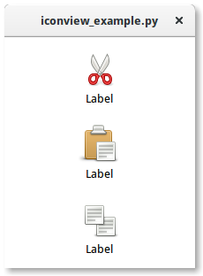

14. IconView¶
A Gtk.IconView é um widget que exibe uma coleção de ícones em uma visualização de grade. Ele suporta recursos como arrastar e soltar, seleções múltiplas e reordenação de itens.
Similarmente a Gtk.TreeView, Gtk.IconView usa um Gtk.ListStore para seu modelo. Em vez de usar renderizadores de célula, Gtk.IconView requer que uma das colunas em seu Gtk.ListStore contenha objetos GdkPixbuf.Pixbuf.
Gtk.IconView suporta vários modos de seleção para permitir a seleção de vários ícones por vez, restringindo seleções para apenas um item ou desaprovando a seleção de itens completamente. Para especificar um modo de seleção, o método Gtk.IconView.set_selection_mode() é usado com um dos modos de seleção Gtk.SelectionMode.
14.1. Exemplo¶
1 2 3 4 5 6 7 8 9 10 11 12 13 14 15 16 17 18 19 20 21 22 23 24 25 26 27 28 29 | import gi
gi.require_version('Gtk', '3.0')
from gi.repository import Gtk
from gi.repository.GdkPixbuf import Pixbuf
icons = ["edit-cut", "edit-paste", "edit-copy"]
class IconViewWindow(Gtk.Window):
def __init__(self):
Gtk.Window.__init__(self)
self.set_default_size(200, 200)
liststore = Gtk.ListStore(Pixbuf, str)
iconview = Gtk.IconView.new()
iconview.set_model(liststore)
iconview.set_pixbuf_column(0)
iconview.set_text_column(1)
for icon in icons:
pixbuf = Gtk.IconTheme.get_default().load_icon(icon, 64, 0)
liststore.append([pixbuf, "Label"])
self.add(iconview)
win = IconViewWindow()
win.connect("destroy", Gtk.main_quit)
win.show_all()
Gtk.main()
|